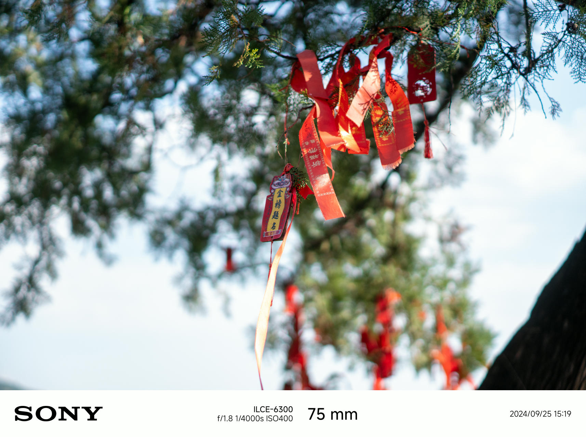
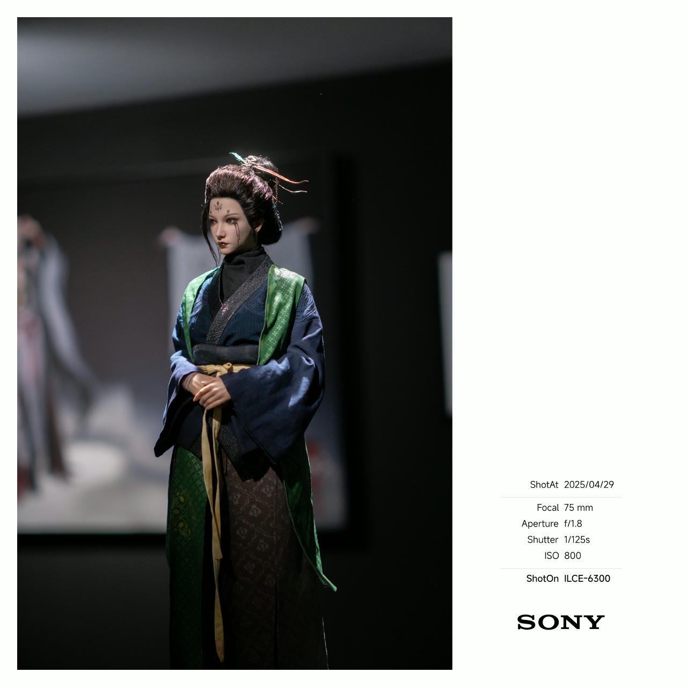
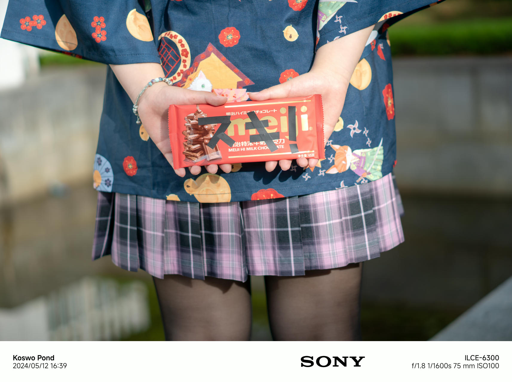
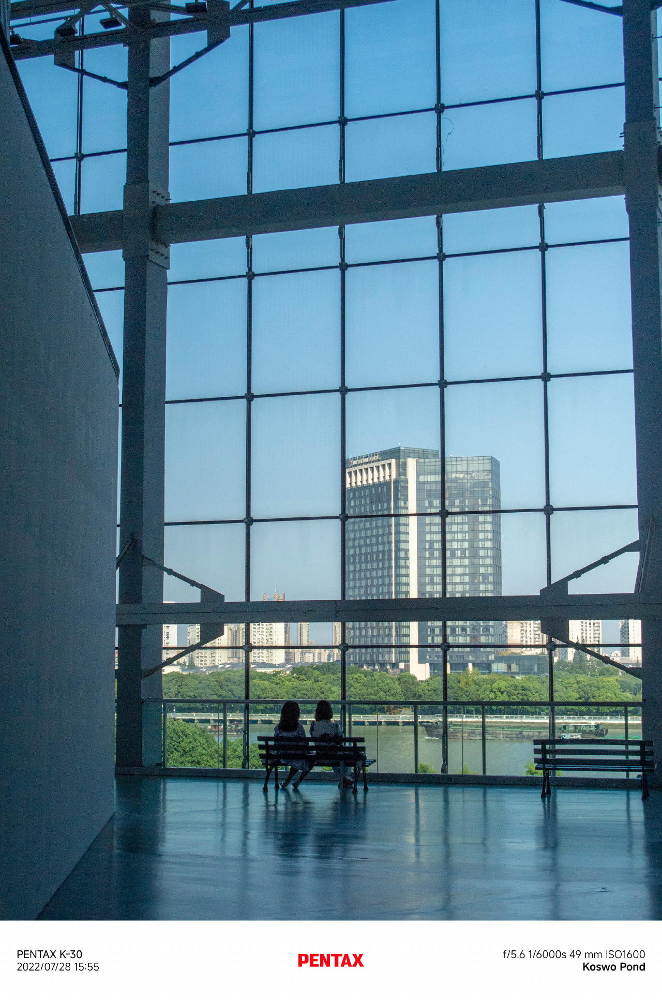
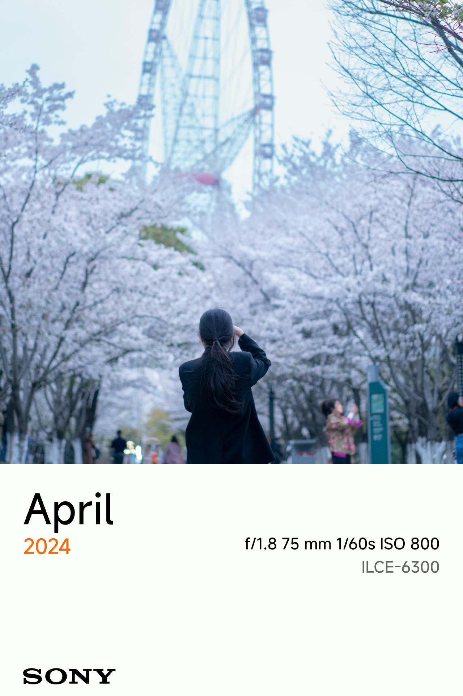
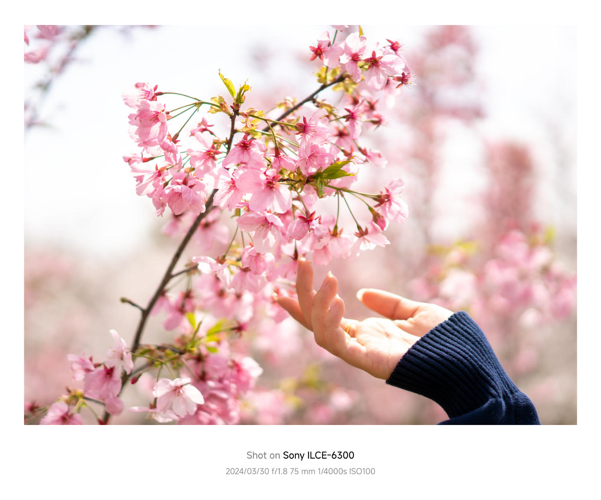
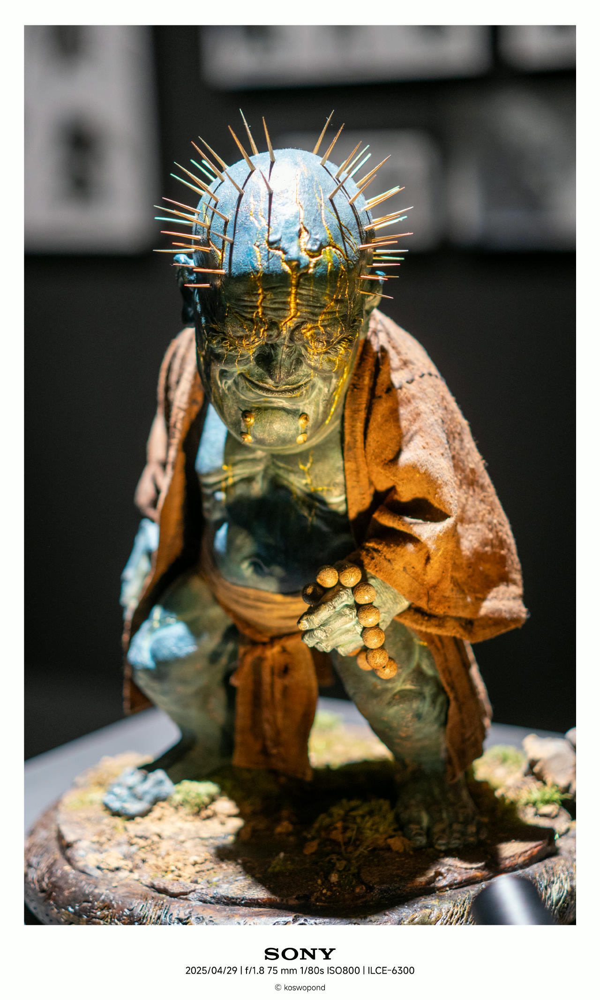
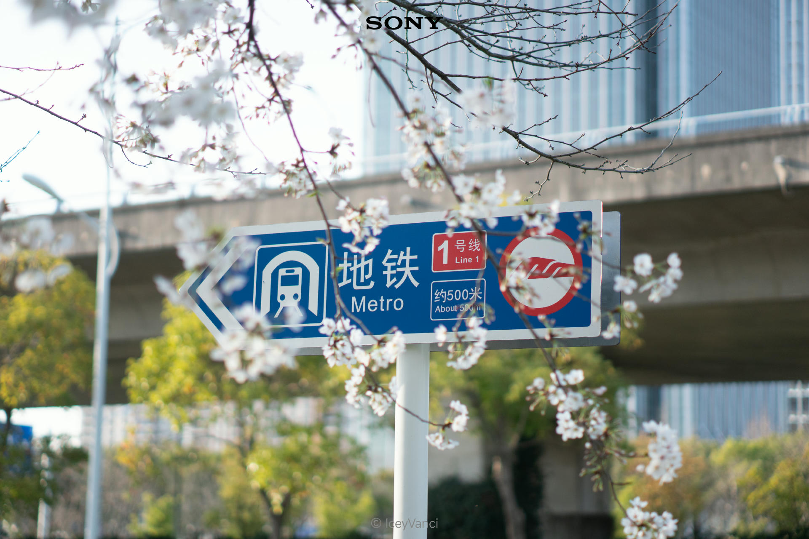

OneFrame v1.08
一款简洁优雅的图片边框添加工具，为您的照片自动添加精美的底部边框，并智能显示相机 EXIF 信息。
GitHub：github.com/IceyVanci/OneFrame
技术栈：原生 HTML/CSS/JS + Docker
EXIF：exifreader + piexifjs
字体：opentype.js + MiSans
本项目入选 Xiaomi MiMo Orbit-百万亿 Token 创造者激励计划，感谢 Xiaomi MiMo Orbit 提供的免费 Token。
许可证：MIT License